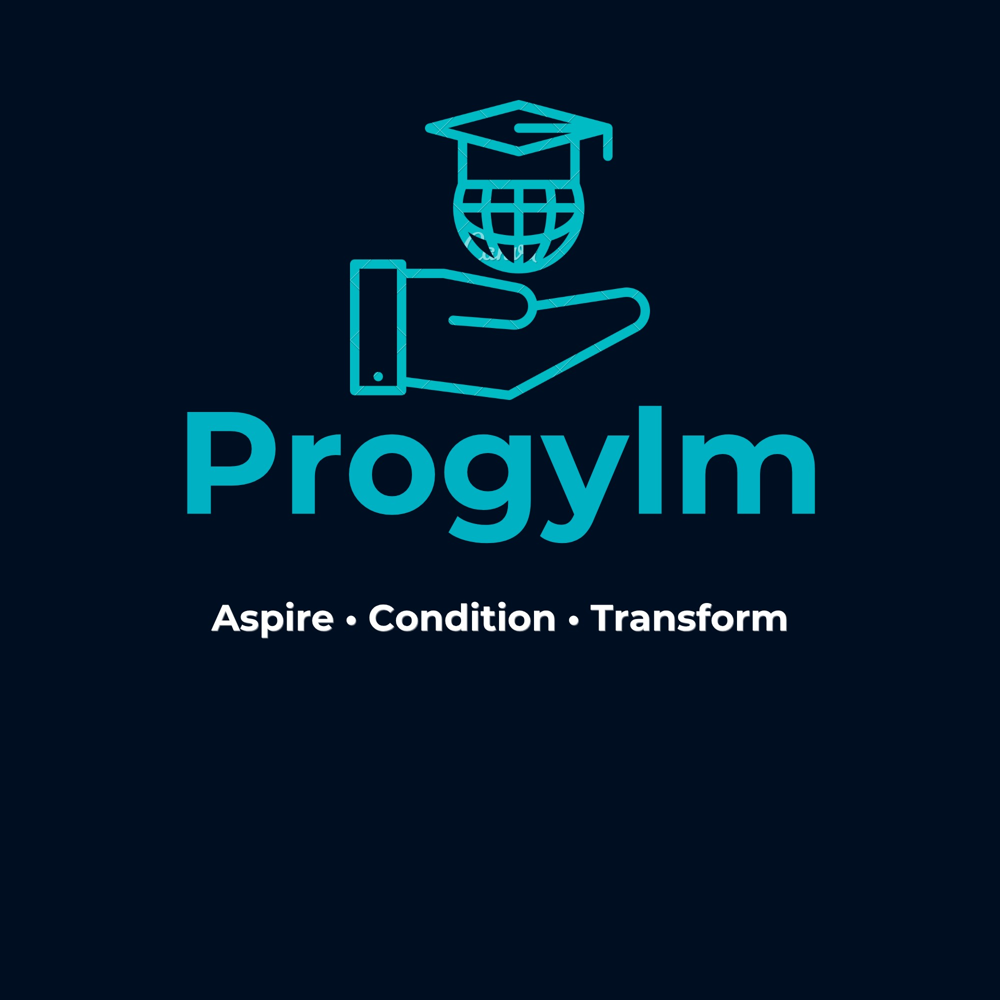

NEET-UG and CUET-UG Biology foundations.
Study living systems through clear explanations, visual thinking, and chapter-wise discipline.

Learning path
This page keeps things simple. Progylm currently focuses on YouTube-first learning for Biology and Physics through a clear, calm study direction for undergraduate aspirants.
Current focus
Use the channel to follow lessons, revise ideas, and strengthen your basics with consistency for NEET-UG, CUET-UG, and school science.
Study living systems through clear explanations, visual thinking, and chapter-wise discipline.
Approach Physics through reasoning first, then equations, practice, and revision.
Exam focus
Progylm highlights NEET-UG and CUET-UG because students need focused direction, but the learning remains concept-first and pressure-free.
Biology and Physics concepts are approached with clarity, revision, and long-term retention in mind.
Students can use the same clean explanations to prepare for subject-based entrance questions.
How to study
Watch one lesson with full attention.
Write the core ideas in your own words.
Revise before moving to the next topic.
Ask better questions when a concept feels unclear.
Begin here
The website supports the brand. NEET-UG and CUET-UG oriented learning begins on YouTube.